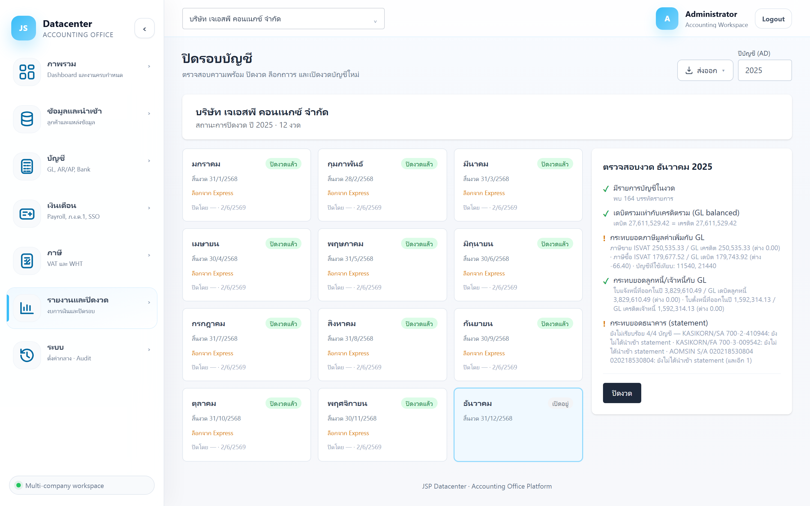

ปิดรอบบัญชี
ตรวจสอบความพร้อมของแต่ละงวด ปิดงวด ล็อกถาวร และเปิดงวดใหม่ — กลไกที่ทำให้ตัวเลขที่ปิดแล้ว ไม่เปลี่ยนย้อนหลัง
งบที่ยื่นไปแล้วต้องพิสูจน์ได้ว่ายอดตรงกับตอนยื่น การปิดและล็อกงวดทำให้ยอดถูกตรึงไว้ แม้ Express จะถูกแก้ภายหลัง
1. การเข้าใช้งาน
- เลือกบริษัทลูกค้า ที่แถบด้านบน (ไม่เลือกจะจัดการไม่ได้)
- เปิดเมนู รายงานและปิดงวด → ปิดรอบบัญชี
- ตั้ง ปีบัญชี (ค.ศ.) มุมขวาบน
- คลิกการ์ดเดือน ที่ต้องการ — แผงตรวจสอบจะขึ้นทางขวา
2. อ่านการ์ดเดือน

| สถานะ | ความหมาย |
|---|---|
| เปิดอยู่ | ยังแก้ไข/นำเข้าข้อมูลของงวดนี้ได้ |
| ปิดงวดแล้ว | ปิดแล้ว แต่ยัง เปิดใหม่ได้ ถ้าจำเป็น |
| ล็อกถาวร | ตรึงถาวร — ใช้เมื่อยื่นงบไปแล้ว |
| ข้อมูลบนการ์ด | ความหมาย |
|---|---|
| สิ้นงวด | วันสิ้นงวดของเดือนนั้น (แสดงเป็น พ.ศ.) |
| ล็อกจาก Express | งวดนี้ถูกล็อกที่ฝั่ง Express แล้ว — เป็นข้อมูลประกอบ ไม่ใช่สถานะของระบบนี้ |
| ปิดโดย — · วันที่ | ใครปิดและปิดเมื่อไร (เก็บเป็นหลักฐาน) |
3. แผงตรวจสอบความพร้อม
คลิกการ์ดเดือนแล้วระบบจะไล่ตรวจ 5 รายการ แล้วแสดงผลพร้อมตัวเลขจริง

| สัญลักษณ์ | ความหมาย |
|---|---|
| ✓ เขียว | ผ่าน |
| ! เหลือง | เตือน — ควรตรวจ แต่ยังปิดงวดได้ |
| ✕ แดง | ไม่ผ่าน — ปุ่มปิดงวดจะกดไม่ได้จนกว่าจะแก้ |
| – เทา | ข้ามการตรวจ พร้อมเหตุผลกำกับ |
5 รายการที่ตรวจ
| รายการ | ตรวจอะไร |
|---|---|
| มีรายการบัญชีในงวด | งวดนั้นมีรายการบัญชีหรือไม่ (เตือนเท่านั้น) |
| เดบิตรวมเท่ากับเครดิตรวม | ข้อเดียวที่บล็อกการปิดงวด — งบต้องดุลตามหลักบัญชีคู่ |
| กระทบยอดภาษีมูลค่าเพิ่มกับ GL | ภาษีขาย/ภาษีซื้อทั้งปีจาก ภ.พ.30 เทียบยอดเคลื่อนไหวในบัญชีภาษีของ GL — บอกด้วยว่าใช้บัญชีไหนเทียบ |
| กระทบยอดลูกหนี้/เจ้าหนี้กับ GL | มูลค่าใบแจ้งหนี้/ใบตั้งหนี้ที่ออกในปี เทียบยอดเดบิตลูกหนี้ / เครดิตเจ้าหนี้ใน GL |
| กระทบยอดธนาคาร (statement) | ทุกบัญชีธนาคารมี statement ของปีนั้น อ่านไฟล์ผ่าน และจับคู่รายการครบหรือยัง |
งวดอื่นจะขึ้นเป็นสีเทาว่า “ตรวจกระทบยอดที่งวดสิ้นปีบัญชี” เพราะ ข้อมูล GL ที่ดึงจาก Express เป็นยอดรวมรายปี ไม่มีรายละเอียดรายเดือน — กระทบยอดรายเดือนจึงทำไม่ได้จริง และสิ้นปีคือจุดที่ต้องใช้อยู่แล้ว
บัญชีภาษีซื้อ/ขายถูกล้างทุกเดือนตอนนำส่ง ยอดคงเหลือปลายปีจึงเป็นศูนย์ทั้งที่มีภาษีทั้งปี · ยอดค้างลูกหนี้/เจ้าหนี้ที่ Express ให้มาเป็นภาพ ณ ตอนนำเข้า ไม่ใช่ยอด ณ สิ้นปีที่กำลังปิด — การเทียบยอดเคลื่อนไหวของปีจึงเป็นวิธีที่ให้คำตอบถูกต้อง
ตั้งใจให้เป็น คำเตือน เพราะผลต่างมักมีเหตุผลอธิบายได้ (รายการปรับปรุง, ภาษีที่ไม่ขอคืน, หนี้ที่ตั้งจากใบสำคัญแทนใบตั้งหนี้) — หน้าที่ของระบบคือ ชี้จุดให้ไปดู ไม่ใช่ตัดสินแทน แต่ควรอธิบายผลต่างทุกรายการให้ได้ก่อนล็อกงวดถาวร
แปลว่าข้อมูลตั้งต้นไม่ครบ — ไม่พบบัญชีภาษีในผังบัญชี, ทะเบียนลูกค้า/ผู้ขายไม่ได้ระบุบัญชี GL หรือยังไม่มีข้อมูลของโมดูลนั้น ต้องกระทบยอดเอง อย่าถือว่าผ่าน
4. ปุ่มดำเนินการ
| ปุ่ม | ทำอะไร / ใช้เมื่อไร |
|---|---|
| ปิดงวด | ปิดงวดที่เลือก — ใช้เมื่อตรวจสอบผ่านและงานของเดือนนั้นเสร็จแล้ว (ยังเปิดใหม่ได้) |
| ล็อกถาวร | ตรึงงวดถาวร — ใช้หลังยื่นงบ/แบบภาษีเรียบร้อยแล้ว |
| เปิดงวดใหม่ | ยกเลิกการปิด กลับมาแก้ไขได้ — ปุ่มสีแดงเพราะเป็นการย้อนสถานะ |
เป็นสถานะที่ตั้งใจให้ย้อนยาก — ปิดงวดธรรมดาพอสำหรับงานประจำเดือน เก็บการล็อกไว้ใช้กับงวดที่ยื่นงบและแบบภาษีไปแล้วจริง
ทุกการปิด/เปิดถูกเก็บพร้อมชื่อผู้ทำและเวลาในประวัติการใช้งาน — ถ้าจำเป็นต้องเปิดงวดที่ปิดไปแล้ว ควรบันทึกเหตุผลไว้ด้วย
5. ลำดับการปิดงวด
- ปิดงวดรายเดือน เมื่อยื่น ภ.พ.30 / ภ.ง.ด. / ปกส. ของเดือนนั้นครบ
- ปลายปี — ทำรายการปรับปรุงที่ กระดาษทำการปิดงบ ให้ครบ
- ออกงบ ที่ งบการเงิน และตรวจว่างบสมดุล
- คำนวณและยื่น ภ.ง.ด.50
- บันทึกชุดรายงาน ที่ ชุดรายงานงบ แล้วอนุมัติ/ล็อก
- ล็อกถาวรทุกงวดของปีนั้น
6. ปัญหาที่พบบ่อย
| อาการ | สาเหตุและวิธีแก้ |
|---|---|
| ปุ่ม “ปิดงวด” กดไม่ได้ | ยังมีรายการตรวจสอบที่ไม่ผ่าน — ไล่แก้ตามรายการในแผงตรวจสอบ |
| กระทบยอดขึ้นเตือนแต่ปิดงวดได้ | ถูกต้องตามการออกแบบ — กระทบยอดเป็นคำเตือน ไม่บล็อก แต่ควรอธิบายผลต่างให้ได้ก่อนล็อกถาวร |
| กระทบยอดขึ้นสีเทาทุกข้อ | งวดที่เลือกไม่ใช่งวดสิ้นปีบัญชี — เลือกงวดสิ้นปี (ตามเดือนเริ่มรอบบัญชีของบริษัท) แล้วดูอีกครั้ง |
| เลือกเดือนแล้วไม่มีอะไรขึ้น | ยังไม่ได้เลือกบริษัท หรือกำลังโหลดผลตรวจสอบอยู่ |
| นำเข้าข้อมูลของงวดที่ปิดแล้วไม่ได้ | ถูกต้องตามการออกแบบ — ถ้าจำเป็นให้เปิดงวดใหม่ก่อน แล้วปิดกลับหลังแก้เสร็จ |
| งวดขึ้น “ล็อกจาก Express” แต่ในระบบยังเปิดอยู่ | เป็นคนละสถานะกัน — ล็อกฝั่ง Express ไม่ได้ปิดงวดในระบบนี้ให้อัตโนมัติ |
| อยากปิดทั้งปีทีเดียว | ต้องปิดทีละงวด เพราะแต่ละงวดตรวจเงื่อนไขแยกกัน |